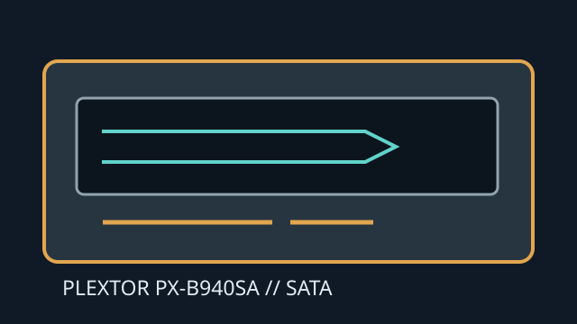

[ INTERNAL BLU-RAY WRITER ]
Plextor PX-B940SA
Internal SATA Blu-ray writer supporting BD-R/RE and legacy DVD/CD formats. Maximum recording rates require supported media and an appropriate firmware write strategy.

IDENTIFICATION: Plextor PX-B940SA; verify the full product code and firmware revision before applying media specifications.
Documented specifications
| Media read/write formats | Reads BD-ROM, BD-R/RE, DVD-ROM, DVD±R/RW, DVD±R DL, DVD-RAM and CD-ROM/R/RW. Writes BD-R (single/dual layer), BD-RE, DVD±R/RW, DVD±R DL, DVD-RAM and CD-R/RW. |
|---|---|
| Maximum speeds | BD-R up to 12× (single layer; verify dual-layer media rate separately); BD-RE up to 2×; BD-ROM up to 8× read. DVD±R up to 16×, DVD±R DL up to 8×; CD-R up to 40× and CD-RW up to 24×. |
| Interface and physical bay | Internal 5.25-inch half-height tray drive with SATA interface (3 Gb/s class). Requires a compatible desktop bay, SATA data cable and SATA power connection. |
| Host and firmware compatibility | Host requires SATA optical-device support. Blu-ray playback/authoring uses separate compatible software. Plextor/PX-B940SA firmware and media strategy are specific to this mechanism; do not use firmware for another PX-B series. |
Manual and technical sources
- Plextor PX-B940SA datasheetModel-specific product sheet for formats, interface and ratings.
- CDRLabs — PX-B940SA reviewDrive review and recording feature/rate discussion.
- CDRLabs — PX-B940SA feature detailsSupplemental technical description for the model.
Consult the product sheet and exact media code; advertised peak rates are not sustained-rate guarantees.